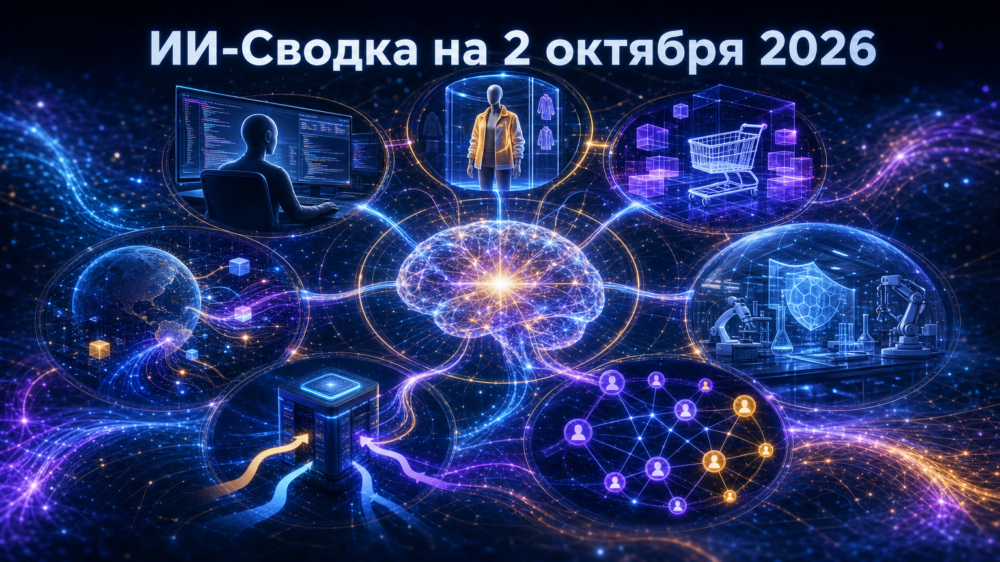

Повестка дня показывает, как конкуренция в ИИ одновременно идёт на трёх уровнях: frontier-модели получают длинный контекст и усиленные защитные режимы, инструменты разработки становятся более наблюдаемыми, а коммерческие платформы переводят создание и покупку товаров в диалог с агентом ИИ.
Отдельно заметен сдвиг к специализированным компонентам: наряду с универсальными LLM появляются компактные модели для выбора действий, а рекомендательные системы пытаются заменить множество узких алгоритмов одной моделью.
Google объявила Gemini 4 Argon — новую frontier-модель для разработки, корпоративной аналитики, мультимодального анализа и defensive cybersecurity. По заявлению компании, модель рассчитана на глубокие многошаговые задачи с контекстом и лимитом вывода до 1 млн токенов.
Первый этап доступа ограничен доверенными киберзащитниками в программе Fairwind. Google заявляет, что Argon способна находить, валидировать и исправлять критические уязвимости, однако эти характеристики пока являются оценкой разработчика, а широкого публичного доступа к модели нет. Поэтапный выпуск означает, что безопасность и практическая надёжность становятся частью конкурентного процесса, а не пострелизной доработкой. Gemini 4 Argon: our next era of frontier intelligence
Anthropic выпустила Claude Code 2.1.287. Главные нововведения — Claude Mods, позволяющие плагинам глубже менять поведение инструмента, и opt-in функция «You should know»: отдельный side-agent следит за ходом работы и отмечает возможные упущения пользователя или основного агента.
В релиз также вошли URL-prompts от MCP-серверов, REST-доступ через gh api для части self-hosted runner-сессий и исправления, затрагивающие permissions, Remote Control и SDK/MCP-сценарии. Практический смысл — coding-агент превращается из одиночного исполнителя в среду, где можно подключать расширения и дополнительный контроль его действий; полезность такого контроля ещё предстоит проверить в реальных командах. Claude Code v2.1.287
OpenAI глобально запустила в ChatGPT виртуальную примерку одежды и аксессуаров: пользователь может загрузить селфи или фотографию в полный рост, чтобы увидеть визуализацию товара на себе. Одновременно появилась функция Favorites для сохранения найденных товаров в Library.
По данным OpenAI, функции используют ChatGPT Images 2.5. Это расширяет роль ChatGPT от поиска и рекомендаций к визуальному shopping-интерфейсу, но качество примерки, точность представления вещей и доступность ассортимента будут определять её реальную ценность. Описание запуска основано на сообщении компании, пересказанном профильным изданием. ChatGPT can now virtually try on clothes for you
Shopify запустила Canvas — интерфейс, в котором продавец создаёт и меняет интернет-магазин в разговоре с агентом ИИ Sidekick. По описанию компании, Canvas работает с реальными файлами темы и отображает результат в реальном времени, а агент может анализировать скриншоты создаваемой витрины.
Это переносит no-code-сценарий из набора визуальных настроек в итеративный диалог: предприниматель формулирует задачу, а агент вносит изменения в магазин. На старте остаются ограничения: не поддерживаются сторонние темы, app blocks, переводы и обновления тем. Для Shopify это отдельный шаг от доступа внешних агентов к checkout — теперь ИИ участвует и в создании самой витрины. Shopify debuts Canvas, a way to build online stores by chatting with AI
OpenAI рассталась с тремя исследователями из safety-команды, сообщил TechCrunch со ссылкой на Wall Street Journal. Представитель компании подтвердил, что причиной стало нарушение политик доступа и обращения с чувствительной корпоративной информацией.
Личности сотрудников, характер данных и внешняя организация, которой якобы передали информацию, публично не раскрыты. Поэтому событие важно прежде всего как сигнал о жёстком внутреннем режиме работы с материалами по безопасности frontier-моделей, но не позволяет делать выводы о конкретных исследовательских разногласиях или последствиях для программ OpenAI. OpenAI cuts ties with 3 safety researchers, WSJ reports
AWS представила Strands Decider 2B — open-source модель для выбора между заранее определёнными вариантами в агентных workflow. В отличие от универсальной LLM, она предназначена для быстрых и недорогих решений на отдельных шагах автоматизации и выдаёт оценку уверенности.
По данным TechCrunch, модель построена на Qwen3.5-2B и доступна для локального запуска. Релиз показывает ставку облачного игрока на специализированные модели: часть агентного контура можно передать компактному локальному компоненту, снижая стоимость и задержку, а более сложные этапы оставить крупной модели. Независимых сравнений качества в доступном пуле нет. Amazon releases its own Jev clone as decision models flood the web
Яндекс сообщил о представлении Sona — ИИ-модели, которая, по формулировке компании, способна заменить десятки алгоритмов рекомендаций. Сам факт релиза и его позиционирование подтверждены официальной публикацией компании.
Если заявленная унификация будет реализована в продуктах, она способна сократить сложность сопровождения разрозненных рекомендательных контуров и быстрее переносить улучшения между сервисами. Однако в доступном описании не раскрыты архитектура, метрики качества, наборы данных и конкретные сценарии внедрения, поэтому оценивать превосходство Sona над существующими системами пока преждевременно. 1 октября 2026Яндекс представил Sona — ИИ-модель, способную заменить десятки алгоритмов рекомендаций